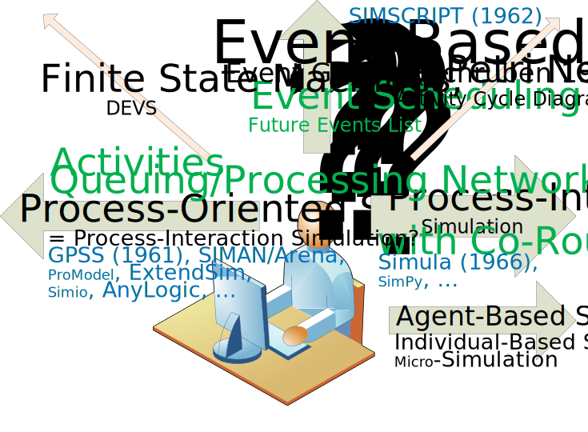
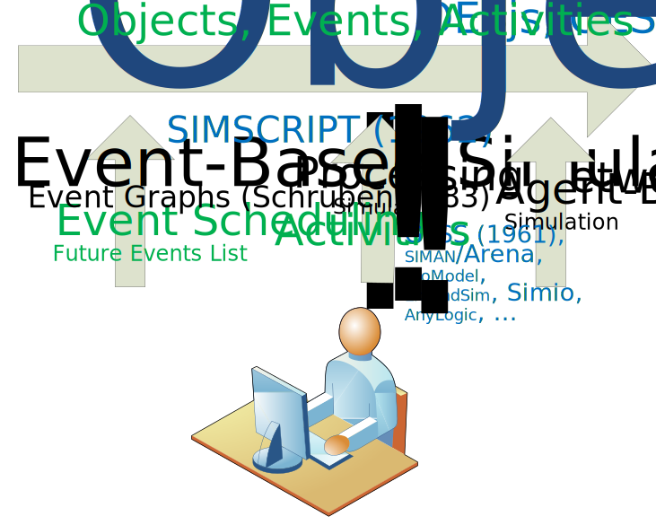

Prolog: Conceptual Confusion in Discrete Event Simulation (DES)
Part I: Discrete Dynamic Systems
Part II: Information Modeling with UML Class Diagrams
Part III: Process Modeling with Extended Event Graphs
Part IV: Simulation with OESjs
Prolog
Conceptual Confusion in DES
Are You also Confused about...
What is Discrete Event Simulation (DES)?
What is an Activity?
What is a Process?
What is Process-Oriented Simulation?
What is Process-Interaction Simulation?
What is an agent, as opposed to an object? What is Agent-Based Simulation?
Where are the objects, and why is there no OO Modeling, in DES?
Why is there no standard modeling language in DES, except Event Graphs (Schruben 1983)?
Why are Event Graphs hardly used?
Some Observations
There is a lot of conceptual confusion in DES.
DES textbooks avoid defining DES.
Event-Based Simulation, as defined by Event Graphs, is the foundation of DES.
All other DES languages/frameworks should extend Event-Based Simulation.
Activities, as an important high-level modeling concept, should be defined on top of events.
"Process-Oriented" Simulation is, in fact, about Queuing/Processing Networks.
Processing Network models ("entities flowing through a system") are a special class of DES models.
Modeling Language Usage
Modeling Language
BPM
DES
Petri Nets (1939)
+
-
Event Graphs (1983)
--
+
UML Activity Diagrams (1997)
+
--
BPMN (2004)
++
-
UML Class Diagrams (1997)
-
-
Conceptual Confusion


Part I
Discrete Dynamic Systems
What is a Discrete Dynamic System (DDS)?
A real world system consisting of objects and a discrete flow of events
such that at any moment in time, the system's past is a sequence of situations each characterized by
a time point t (the situation time)
the system state at t (as a combination of the states of all objects of the system), and
a set of imminent events, to occur at times greater than t.
and each situation St+1 is created from St via causal regularities
triggered through the events occuring at t.
Causal Regularities
An event e@t causes:
state changesΔ of affected objects, and
follow-up eventse1@t1, e2@t2,...
according to the dispositions of affected objects, which can be generalized as causal regularities
of the form
t, O, e@t → Δ, {e1@t1, e2@t2,...} with ti > t
with O being the set of the system's object states at time t, such that
O' = Upd( O, Δ)
is the resulting changed system state.
Modeling a DDS
Computationally, a DDS can be represented by an Object Event Model (OEM) consisting of:
object typesOT, e.g., in the form of classes of an object-oriented language;
event typesET, e.g., in the form of classes of an object-oriented language;
event rulesR representing causal regularities, e.g., in the form of onEvent
methods of the class that implements the triggering event type.
While OT and ET can be defined by a UML Class Diagram, the set of event rules R can be defined by an Extended Event Graph
(or a basic DPMN Process Diagram).
Example: A Manufacturing Workstation
Event rule 1: When a new part arrives at the workstation it is added to its input buffer,
and if the workstation is available, processing starts.
Event rule 2: When processing starts, the next part is fetched from the input buffer and is being processed until processing ends.
Event rule 3: When processing ends, the processed part is removed, and, if the input buffer is not empty,
the workstation fetches the next part and starts processing it.
var PartArrival = new cLASS({
Name: "PartArrival",
supertypeName: "eVENT",
properties: {
"workStation": {range: "WorkStation", label:"Workstation"}
},
methods: {
"onEvent": function () {
var events=[], ws = this.workStation;
// add part to buffer
ws.inputBufferLength++;
// update statistics
sim.stat.arrivedParts++;
// if the work station is available
if (ws.status === WorkstationStatusEL.AVAILABLE) {
// schedule the part's processing start event
events.push( new ProcessingStart({ workStation: ws}));
}
return events;
}
}
});